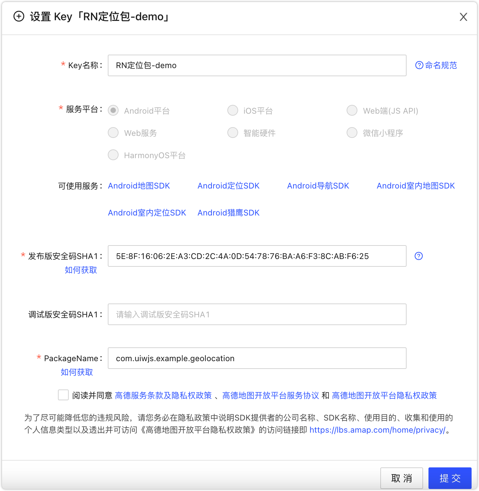

@uiw/react-native-amap-geolocation


React Native 高德地图定位模块，支持 Android/iOS。提供尽可能完善的原生接口，同时提供符合 Web 标准的 Geolocation API 以及 完整的接口文档。
注意事项
⚠️ 高德地图定位部分 API 需要真机调试和 Access WiFi Information 权限。
Android：需要正确的设置 apiKey，获取 Key 的方法
官方获取 Key方法：https://lbs.amap.com/api/android-location-sdk/guide/create-project/get-key
A. 使用 keytool（jdk自带工具）获取 SHA1，默认 测试版本 keystore 路径 <项目名称>/android/app/debug.keystore
keytool -v -list -keystore keystore文件路径
B. 获取 PackageName，获取路径 <项目名称>/android/app/src/main/AndroidManifest.xml
C. 在高德地图账号中设置 SHA1 和 PackageName。

D. 按照上面步骤正确设置你的 apiKey 才会起作用。
Android：无法获取逆地理信息的问题，KEY鉴权失败
iOS：获取逆地理信息需要高德地图配置 apiKey

iOS：高德地图包需要 WiFi 权限
iOS 端高德地图包需要 WiFi 权限，否则报如下警告：
nehelper sent invalid result code [1] for Wi-Fi information request

同时需要在 Xcode 中添加 Access WiFi Information 能力选项

iOS：需要保证"Background Modes"中的"Location updates"处于选中状态
- 左侧目录中选中工程名，开启
TARGETS->Capabilities->Background Modes - 在
Background Modes中勾选Location updates
Android：获取 apikey 失败 errorCode : 10001
原因：***确保调用SDK任何接口前先调用更新隐私合规updatePrivacyShow、updatePrivacyAgree两个接口并且参数值都为true，若未正确设置有崩溃风险***
使用loc SDK 功能使用前请确保已经正确设置apiKey，如有疑问请在高德开放平台官网中搜索【INVALID_USER_KEY】相关内容进行解决。
解决方法：重新申请 apikey
Android：new NativeEventEmitter()` was called with a non-null argument without the required `addListener` method
WARN `new NativeEventEmitter()` was called with a non-null argument without the required `addListener` method.
WARN `new NativeEventEmitter()` was called with a non-null argument without the required `removeListeners` method.
解决方法：重新申请 apikey
Android：请在高德开放平台官网中搜索"SERVICE_NOT_EXIST"相关内容进行解决
请在高德开放平台官网中搜索"SERVICE_NOT_EXIST"相关内容进行解决
解决方法：重新申请 apikey

安装依赖
yarn add @uiw/react-native-amap-geolocation
# react-native version >= 0.60+
$ cd ios && pod install
基本用法
import { PermissionsAndroid } from "react-native";
import { Platform } from 'react-native';
import AMapGeolocation from '@uiw/react-native-amap-geolocation';
await PermissionsAndroid.requestMultiple([
PermissionsAndroid.PERMISSIONS.ACCESS_FINE_LOCATION,
PermissionsAndroid.PERMISSIONS.ACCESS_COARSE_LOCATION,
]);
let apiKey = '';
if (Platform.OS === 'ios') {
apiKey = '用于 iOS 的 apiKey';
}
if (Platform.OS === 'android') {
apiKey = '用于 Android 的 apiKey';
}
// 设置 高德地图 apiKey
AMapGeolocation.setApiKey(apiKey);
// iOS 指定所需的精度级别
AMapGeolocation.setDesiredAccuracy(3);
// Android 指定所需的精度级别，可选设置，默认 高精度定位模式
AMapGeolocation.setLocationMode(1);
// 定位是否返回逆地理信息
AMapGeolocation.setLocatingWithReGeocode(true);
// 开始定位
AMapGeolocation.start();
// 停止更新位置信息
AMapGeolocation.start();
// 是否已经开始持续定位了
AMapGeolocation.isStarted();
// 在某些情况获取不到数据，建议使用 `addLocationListener` 来实现
async function getCurrentLocation(){
try {
const json = await AMapGeolocation.getCurrentLocation();
console.log('json:', json);
} catch (error) {
console.log('error:', error);
}
}
定位监听函数
import AMapGeolocation from '@uiw/react-native-amap-geolocation';
let apiKey = '';
if (Platform.OS === 'ios') {
apiKey = '用于 iOS 的 apiKey';
}
if (Platform.OS === 'android') {
apiKey = '用于 Android 的 apiKey';
}
// 设置 高德地图 apiKey
AMapGeolocation.setApiKey(apiKey);
// 定位是否返回逆地理信息
AMapGeolocation.setLocatingWithReGeocode(true);
// 当设备可以正常联网时，还可以返回该定位点的对应的中国境内位置信息（包括：省、市、区/县以及详细地址）。
const listener = AMapGeolocation.addLocationListener((location) => {
console.log('返回定位信息', location);
this.setState({
location: JSON.stringify(location, null, 2),
});
});
// 移除监听事件
listener.remove();
// 开启监听
AMapGeolocation.start();
逆地理编码
import AMapGeolocation from '@uiw/react-native-amap-geolocation';
let apiKey = '';
if (Platform.OS === 'ios') {
apiKey = '用于 iOS 的 apiKey';
}
if (Platform.OS === 'android') {
apiKey = '用于 Android 的 apiKey';
}
// 设置 高德地图 apiKey
AMapGeolocation.setApiKey(apiKey);
// 定位是否返回逆地理信息
AMapGeolocation.setLocatingWithReGeocode(true);
坐标转换
坐标转换，支持将iOS自带定位 GPS/Google/MapBar/Baidu/MapABC 多种坐标系的坐标转换成高德坐标
import AMapGeolocation from '@uiw/react-native-amap-geolocation';
// 将百度地图转换为 高德地图 经纬度
const resulte = await AMapGeolocation.coordinateConvert({
latitude: 40.002172,
longitude: 116.467357,
}, 0);
// => {longitude: 116.46071927031961, latitude: 39.99651501274128}
定位回调频率限制
import AMapGeolocation from '@uiw/react-native-amap-geolocation';
// android，5 秒请求一次定位
AMapGeolocation.setInterval(5000);
// ios，设备移动超过 10 米才会更新位置信息
AMapGeolocation.setDistanceFilter(10);
API
/** 一个地理坐标点。 */
export interface Point {
/** 纬度 */
latitude: number;
/** 经度 */
longitude: number;
}
/**
* 坐标信息
* @see https://developer.mozilla.org/zh-CN/docs/Web/API/Coordinates
*/
export interface Coordinates extends Point {
/** 高度 - 海拔高度，以米为单位。 */
altitude: number;
/** 水平精度 - 位置的不确定性半径，以米为单位。 */
accuracy: number;
/** 移动方向，需要 GPS */
heading: number;
/** 移动速度（米/秒），需要 GPS */
speed: number;
/** 时间戳记 - 确定此位置的时间。 */
timestamp: number;
/**
* 是否有可用坐标
* @platform ios
*/
isAvailableCoordinate?: boolean;
}
/**
* 逆地理信息 + 坐标信息
*/
export interface ReGeocode extends Coordinates {
/** 格式化地址 */
address: string;
/** 国家 */
country: string;
/** 省/直辖市，如 `湖北省` */
province: string;
/** 市，如 `武汉市`。对应城市<a href="interfaces/regeocode.html#citycode">cityCode</a>编码 */
city: string;
/** 区，如 `武昌区`。对应区域<a href="interfaces/regeocode.html#adcode">adCode</a>编码 */
district: string;
// ///乡镇
// // 该字段从v2.2.0版本起不再返回数据,建议您使用AMapSearchKit的逆地理功能获取.
// township: string;
// ///社区
// // 该字段从v2.2.0版本起不再返回数据,建议您使用AMapSearchKit的逆地理功能获取.
// neighborhood: string;
// ///建筑
// // 该字段从v2.2.0版本起不再返回数据,建议您使用AMapSearchKit的逆地理功能获取.
// building: string;
/** 城市编码 */
cityCode: string;
/** * 区域编码 */
adCode: string;
/** 街道名称 */
street: string;
/** 门牌号 */
streetNumber: string;
/** 兴趣点名称 */
poiName: string;
/** 所属兴趣点名称 */
aoiName: string;
/**
* 获取定位信息描述
* @version SDK2.0.0 开始支持
* @platform android
*/
description?: string;
/**
* 获取坐标系类型 高德定位sdk会返回两种坐标系：
* 坐标系 AMapLocation.COORD_TYPE_GCJ02 -- GCJ02
* 坐标系 AMapLocation.COORD_TYPE_WGS84 -- WGS84
* 国外定位时返回的是WGS84坐标系
* @platform android
*/
coordType?: 'GCJ02' | 'WGS84';
/**
* 返回支持室内定位的建筑物ID信息
* @platform android
*/
buildingId?: string;
}
/**
* 配置高德地图 Key
* -
* - [高德获取 iOS key 文档地址](https://lbs.amap.com/api/ios-location-sdk/guide/create-project/get-key)
* - [高德获取 Android key 文档地址](https://lbs.amap.com/api/android-location-sdk/guide/create-project/get-key)
*
* 注意：安卓设置 key 很重要，由于在 android 平台必须优先设置 ApiKey 才能初始化 地图实例。
* 所以这个方法在android 平台下，还附带了初始化地图实例。
*/
export function setApiKey(scheme: string): void;
/**
* 开始连续定位
*/
export function start(): void;
/**
* 停止更新位置信息
*/
export function stop(): void;
/**
* 开始获取设备朝向，如果设备支持方向识别，则会通过代理回调方法-wx
* @platform ios
*/
export function startUpdatingHeading(): void;
/**
* 停止获取设备朝向-wx
* @platform ios
*/
export function stopUpdatingHeading(): void;
/**
* 是否已经开始持续定位了
*/
export function isStarted(): Promise<Boolean>;
/**
* 用于指定所需的精度级别。
* 单位米，默认为 kCLLocationAccuracyBest。定位服务会尽可能去获取满足desiredAccuracy的定位结果，但不保证一定会得到满足期望的结果。
* 注意：设置为 kCLLocationAccuracyBest 或 kCLLocationAccuracyBestForNavigation 时，
* 单次定位会在达到 locationTimeout 设定的时间后，将时间内获取到的最高精度的定位结果返回。
* 高德提供了 kCLLocationAccuracyBest 参数，设置该参数可以获取到精度在10m 左右的定位结果，但是相应的需要付出比较长的时间（10s左右），
* 越高的精度需要持续定位时间越长。
* 推荐：kCLLocationAccuracyHundredMeters，一次还不错的定位，偏差在百米左右，超时时间设置在2s-3s左右即可。
*
* @param {number} accuracy 1
* - 0 => kCLLocationAccuracyBestForNavigation
* - 1 => kCLLocationAccuracyBest
* - 2 => kCLLocationAccuracyNearestTenMeters
* - 3 => kCLLocationAccuracyHundredMeters
* - 4 => kCLLocationAccuracyKilometer
* - 5 => kCLLocationAccuracyThreeKilometers
* @platform ios
*/
export function setDesiredAccuracy(accuracy: 0 | 1 | 2 | 3 | 4 | 5): void;
/**
* 坐标转换，支持将iOS自带定位 GPS/Google/MapBar/Baidu/MapABC 多种坐标系的坐标转换成高德坐标
*
* - -1 -> `AMapCoordinateTypeAMap` // <AMap
* - 0 -> `AMapCoordinateTypeBaidu` // <Baidu
* - 1 -> `AMapCoordinateTypeMapBar` // <MapBar
* - 2 -> `AMapCoordinateTypeMapABC` // <MapABC
* - 3 -> `AMapCoordinateTypeSoSoMap` // <SoSoMap
* - 4 -> `AMapCoordinateTypeAliYun` // <AliYun
* - 5 -> `AMapCoordinateTypeGoogle` // <Google
* - 6 -> `AMapCoordinateTypeGPS` // <GPS
* @param coordinate 待转换的经纬度
* @param type 坐标系类型，对应的序号
* 如：coordinate = { latitude: 40.002172, longitude: 116.467357 }
*/
export function coordinateConvert(coordinate: Point, type: -1 | 0 | 1 | 2 | 3 | 4 | 5 | 6): Promise<Point>;
/**
* 设置发起定位请求的时间间隔，单位：毫秒，默认值：2000毫秒
* @platform android
* @default 2000
*/
export function setInterval(interval: number): void;
/**
* 指定定位是否会被系统自动暂停。默认为 false
* @platform ios
* @param value false
*/
export function setPausesLocationUpdatesAutomatically(value: boolean): void;
/**
* 是否允许后台定位。默认为NO。只在iOS 9.0及之后起作用。
* 设置为YES的时候必须保证 Background Modes 中的 Location updates 处于选中状态，否则会抛出异常。
* @platform ios
* @param value false
*/
export function setAllowsBackgroundLocationUpdates(value: boolean): void;
/**
* 设定定位的最小更新距离。单位米，默认，表示只要检测到设备位置发生变化就会更新位置信息。
* @platform ios
*/
export function setDistanceFilter(time: number): void;
/**
* 定位超时时间，最低2s
* @platform ios
*/
export function setLocationTimeout(number: number): void;
/**
* 逆地理请求超时时间，最低 2s，默认为2s 注意在单次定位请求前设置。
* @platform ios
*/
export function setReGeocodeTimeout(number: number): void;
/**
* 获取当前定位
* 默认只获取经纬度，`iOS` 通过 <a href="globals.html#setlocatingwithregeocode"><code>setLocatingWithReGeocode</code></a> 设置，是否返回逆地理信息
*/
export function getCurrentLocation(): Promise<Coordinates | ReGeocode>;
/**
* 定位是否返回逆地理信息，为了与 android 保持一致，默认 值为 true。
* @platform ios 默认值：false, 返回地址信息，需要手动设置
* @platform android 默认值：true, 返回地址信息
* @default true
*/
export function setLocatingWithReGeocode(isReGeocode: boolean): void;
/**
* 设置定位模式。
* 默认值：`Hight_Accuracy` 高精度模式
* android 默认定位模式，目前支持三种定位模式
* - 1 => `Hight_Accuracy` 高精度定位模式：在这种定位模式下，将同时使用高德网络定位和卫星定位,优先返回精度高的定位
* - 2 => `Battery_Saving` 低功耗定位模式：在这种模式下，将只使用高德网络定位
* - 3 => `Device_Sensors` 仅设备定位模式：在这种模式下，将只使用卫星定位。
* @param {number} mode `1~3`
* @platform android
* @default 1
*/
export function setLocationMode(mode: 1 | 2 | 3): void;
/**
* 设置是否单次定位
* @default false
* @platform android
*/
export function setOnceLocation(isOnceLocation: boolean): void;
/**
* 设置是否使用设备传感器。是否开启设备传感器，当设置为true时，网络定位可以返回海拔、角度和速度。
* @default false
* @platform android
*/
export function setSensorEnable(sensorEnable: boolean): void;
/**
* 设置是否允许调用 WIFI 刷新。
* 默认值为true，当设置为false时会停止主动调用WIFI刷新，将会极大程度影响定位精度，但可以有效的降低定位耗电
* @platform android
* @default true
*/
export function setWifiScan(isOnceLocation: boolean): void;
/**
* 设置逆地理信息的语言，目前之中中文和英文。
* @default DEFAULT
*/
export function setGeoLanguage(language: 'DEFAULT' | 'EN' | 'ZH'): void;
/**
* 连续定位监听事件
* @param {Function} listener
*/
export function addLocationListener(listener?: (location: Coordinates | ReGeocode) => void): void;
/**
* 设置是否gps优先-wx
* 只有在单次定位高精度定位模式下有效
* 设置为true时，会等待卫星定位结果返回，最多等待30秒，若30秒后仍无卫星定位结果返回，返回网络定位结果
* @default false
* @platform android
*/
export function setGpsFirst(isSetGpsFirst: boolean): void;
/**
* 设置定位是否等待WIFI列表刷新-wx
* 定位精度会更高，但是定位速度会变慢1-3秒
* 从3.7.0版本开始，支持连续定位（连续定位时首次会等待刷新） 3.7.0之前的版本，仅适用于单次定位，当设置为true时，连续定位会自动变为单次定位,
* @default false
* @platform android
*/
export function setOnceLocationLatest(isOnceLocationLatest: boolean): void;
/**
* 设置是否使用缓存策略, 默认为true 使用缓存策略
* @default true
* @platform android
*/
export function setLocationCacheEnable(isLocationCacheEnable: boolean): void;
/**
* 设置网络请求超时时间。默认为30秒。在仅设备模式下无效
* @default 30000
* @platform android
*/
export function setHttpTimeOut(httpTimeOut: number): void;
/**
* 设置网络请求的协议。默认为HTTP协议。可选HTTP或者HTTPS
* @default HTTP
* @platform android
*/
export function setLocationProtocol(amapLocationProtocol: 'HTTP' | 'HTTPS'): void;
错误处理
[NetworkInfo] Signal strength query returned error: Error Domain=NSPOSIXErrorDomain Code=13 "Permission denied", descriptor: <CTServiceDescriptor 0x283317100, domain=1, instance=1>
在 Product -> Scheme -> Edit Scheme -> Run -> Arguments -> Environment Variables 添加 OS_ACTIVITY_MODE disable
nehelper sent invalid result code [1] for Wi-Fi information request
配置 WiFi 权限
其它
当前工程基于 @brodybits/create-react-native-module 初始化。
npx create-react-native-module --package-identifier com.uiwjs.example.geolocation --object-class-name RNAMapGeolocation --generate-example AMapGeolocation --example-react-native-version 0.63.0 --module-name @uiw/react-native-amap-geolocation --github-account uiwjs --author-name "Kenny Wong" --author-email "wowohoo@qq.com"
开发
cd example # 进入实例 example 工程，根目录不需要安装，会引发错误
yarn install # 安装依赖
cd ios # 进入 example/ios 目录安装依赖
pod instll # 安装依赖